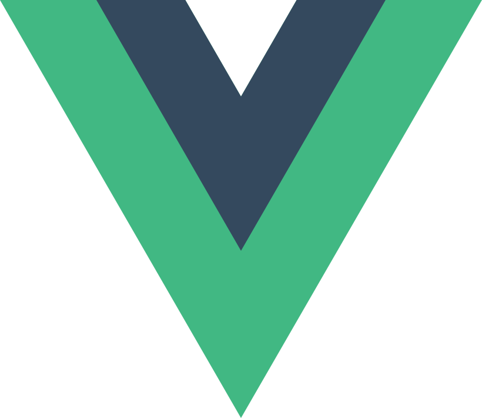

Introduce Myself
Hi There！👋
My name is 戴万兴，you can also call me by my english name Wonder Dai.
I was born in Yiyang city. Hunan Province.
I am a frontend developer and has been working this job almost for three years.
At University, My Major is CS. I have learned C and Java program language. It' boring and tedious to me. one day a college club I was a member of asked me to make a website for club. So I begin to learn javascript,css and html, after I learned it and maked a simple website. i found this program language could build beautiful and suitable web app. I love it! This is why i became a frontend developer reason.
I am focus on Typescript,Vue.js and node, at present I'm learning regular expressions.
If you interests me, please contact me by email or twitter ;-)
My Github Toys
GitHub repositories that I've built.
My Interests
Topics that I interested about.
- 